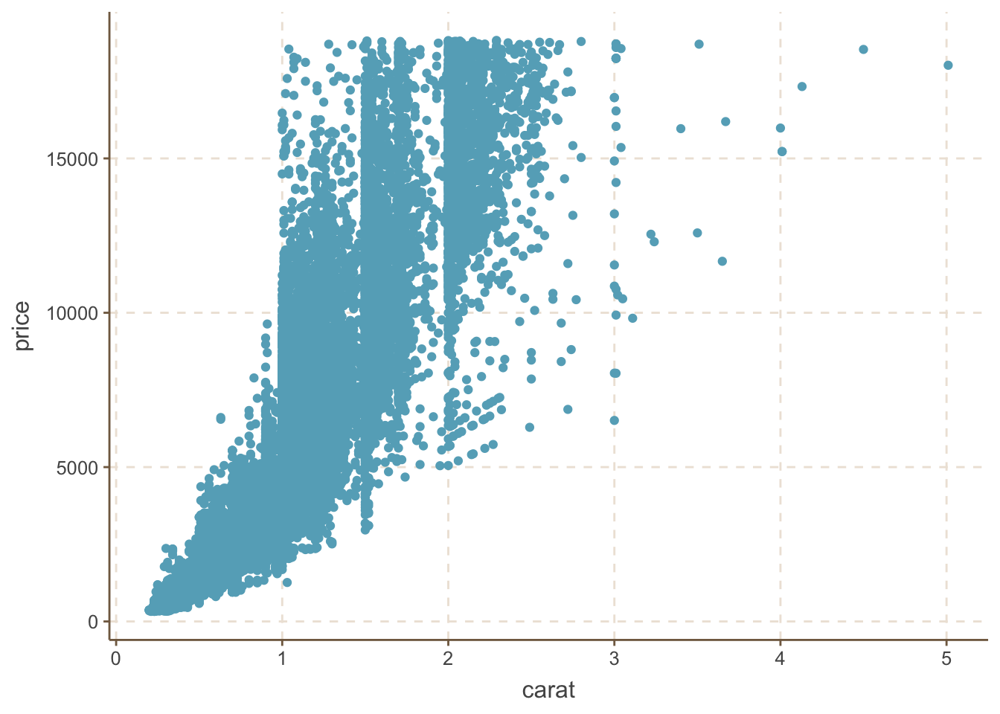
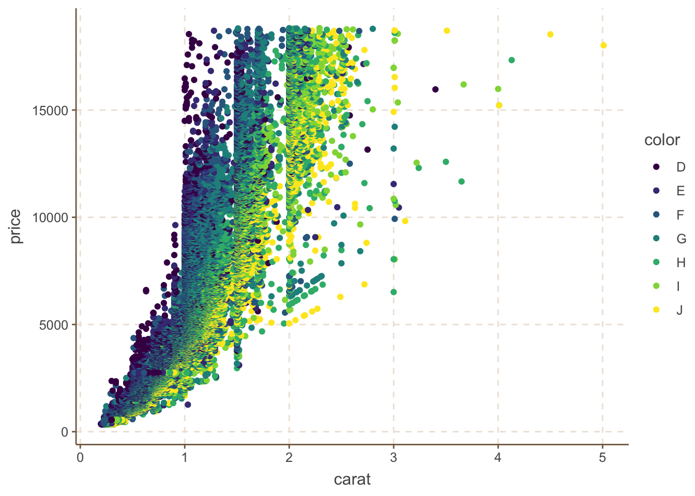
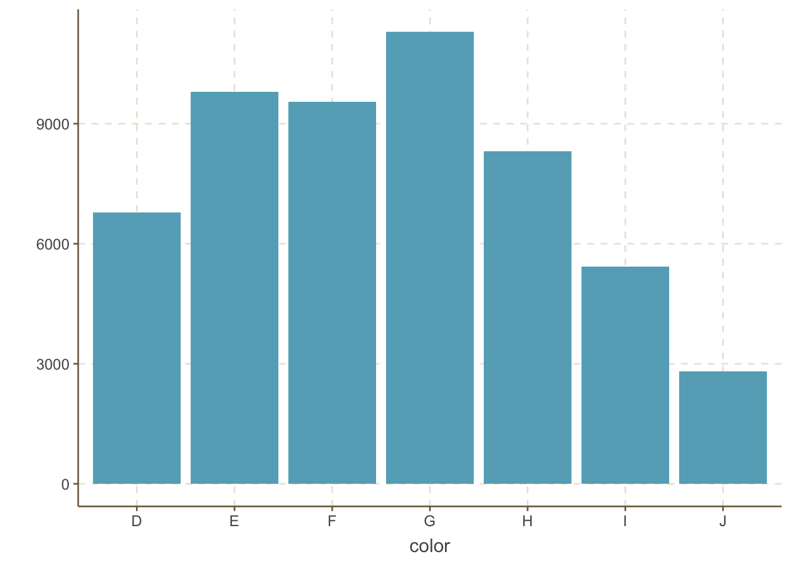
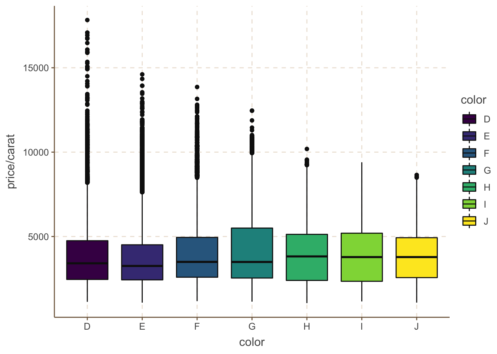

Chapter 3 Advanced-graphics
地图毫无疑问是展示地理信息数据时最直观的工具，尤其是当地图和统计量结合时，其功效则会进一步加强。地理信息系统(GIS)已经成为研究空间和地理数据的热门工具，地图的应用也是屡见不鲜。地图的本质是多边形，而多边形的边界则由地理经纬度数据确定。
3.1 maps包
R中的附加包 maps 是目前比较完善的地图程序包之一，maps包中核心的函数为map()，该函数的两个主要参数为地图数据库database和地图区域region，地图数据库中包含了所有区域的经纬度数据以及相应的区域名称，在指定一个数据库和一系列区域名称之后，这些区域的地图便可由map()生成。
library(maps)
usage(map, w = 0.8)
map(
database = "world", regions = ".", exact = FALSE,
boundary = TRUE, interior = TRUE, projection = "", parameters = NULL,
orientation = NULL, fill = FALSE, col = 1, plot = TRUE,
add = FALSE, namesonly = FALSE, xlim = NULL, ylim = NULL,
wrap = FALSE, resolution = if (plot) 1 else 0, type = "l",
bg = par("bg"), mar = c(4.1, 4.1, par("mar")[3], 0.1),
border = 0.01, ...
)3.1.1 世界地图
通过运行如下代码得到世界地图。maps包里面还包括了美国、新西兰、意大利等国的地图。
library(maps)
par(family = "STKaiti")
map("world", fill = TRUE, col = rainbow(200), ylim = c(-60, 90), mar = c(0, 0, 0, 0))
title("世界地图") # 添加标题
3.1.2 美国地图
map("state",
fill = TRUE, col = rainbow(209),
mar = c(0, 0, 2, 0)
)
par(family = "STKaiti")
title("美国地图")
可以根据需要绘制某国地图或者美国某几个州的地图，只需在map()函数中添加选项例如region = c('new york', 'new jersey', 'penn') 即可。
map("state",
region = c("new york", "new jersey", "penn"),
fill = TRUE, col = rainbow(3), mar = c(2, 3, 4, 3)
)
par(family = "STKaiti")
title("美国三州地图")
3.2 中国地图
在国家基础地理信息中心的网站上提供了免费的GIS数据下载，里面包括了国界与省界数据，使用R的maptools::readShapePoly或rgdal::readOGR可以读取shp文件。
library(maptools)
library(rgdal)
china <- readOGR("./china/bou2_4p.shp")
china@data$NAME <- iconv(china@data$NAME, "GBK", "UTF-8")该数据包含了中国925个地区的的面积、周长、编号、行政区名称等信息。
str(china@data)## 'data.frame': 925 obs. of 7 variables:
## $ AREA : num 54.4 129.1 175.6 21.3 15.6 ...
## $ PERIMETER : num 68.5 129.9 84.9 41.2 38.4 ...
## $ BOU2_4M_ : chr "2" "3" "4" "5" ...
## $ BOU2_4M_ID: chr "23" "15" "65" "22" ...
## $ ADCODE93 : int 230000 150000 650000 220000 210000 620000 130000 110000 210000 210000 ...
## $ ADCODE99 : int 230000 150000 650000 220000 210000 620000 130000 110000 210000 210000 ...
## $ NAME : chr "黑龙江省" "内蒙古自治区" "新疆维吾尔自治区" "吉林省" ...在绘制地图时，每一个省市自治区或岛屿都是用一个多边形来表示的。 GIS 数据提供了每一个行政区其多边形逐点的坐标，然后 R 通过顺次连接这些坐标，就绘制出了一个多边形区域。
plot(china)
par(family = "STKaiti")
title("中国地图")
plot命令中的col参数在本例中应该是一个长度为 925 的向量，其第 i 个分量的取值就代表了地图中第 i 个多边形的颜色。
plot(china, col = gray(924:0 / 924))
也可以通过查找相应的行政区对应的行名对col参数进行赋值，对相应地区进行着色：
getColor <- function(mapdata, provname, provcol, othercol) {
f <- function(x, y) ifelse(x %in% y, which(y == x), 0)
colIndex <- sapply(mapdata@data$NAME, f, provname)
col <- c(othercol, provcol)[colIndex + 1]
return(col)
}其中mapdata是存放地图数据的变量，provname是需要改变颜色的地区的名称，provcol是对应于provname的代表颜色的向量，othercol是其它地区的颜色。举例如下：
provname <- c("北京市", "上海市", "重庆市", "福建省")
provcol <- c("red", "green", "yellow", "purple")
plot(china, col = getColor(china, provname, provcol, "white"))
利用类似的方法就可以根据自己的需要对不同的区域进行着色，下面再举一例。从国家统计局获取 2007 年我国各地区的人口数据，然后根据人口的多少对各省份进行着色。
provname <- c(
"北京市", "天津市", "河北省", "山西省", "内蒙古自治区",
"辽宁省", "吉林省", "黑龙江省", "上海市", "江苏省",
"浙江省", "安徽省", "福建省", "江西省", "山东省",
"河南省", "湖北省", "湖南省", "广东省",
"广西壮族自治区", "海南省", "重庆市", "四川省", "贵州省",
"云南省", "西藏自治区", "陕西省", "甘肃省", "青海省",
"宁夏回族自治区", "新疆维吾尔自治区", "台湾省",
"香港特别行政区"
)
pop <- c(
1633, 1115, 6943, 3393, 2405, 4298, 2730, 3824, 1858, 7625,
5060, 6118, 3581, 4368, 9367, 9360, 5699, 6355, 9449,
4768, 845, 2816, 8127, 3762, 4514, 284, 3748, 2617,
552, 610, 2095, 2296, 693
)
provcol <- rgb(red = 1 - pop / max(pop) / 2, green = 1 - pop / max(pop) / 2, blue = 0)
plot(china, col = getColor(china, provname, provcol, "white"), xlab = "", ylab = "")
此外，还可以利用这个参数画出国内某一部分的地图，例如绘制福建、浙江、江西和广东四个东南地区省份的地图如下：
southeast <- c("福建省", "浙江省", "江西省", "广东省")
plot(china,
col = getColor(china, southeast, rep("blue", 4), "white"), border = "white",
xlab = "", ylab = ""
)
可以人工将各省会的信息在地图上标记出来
par(mar = rep(0, 4))
dat <- read.csv(text = "城市,jd,wd
北 京,116.4666667,39.9
上 海,121.4833333,31.23333333
天 津,117.1833333,39.15
重 庆,106.5333333,29.53333333
哈尔滨,126.6833333,45.75
长 春,125.3166667,43.86666667
沈 阳,123.4,41.83333333
呼和浩特,111.8,40.81666667
石家庄,114.4666667,38.03333333
太 原,112.5666667,37.86666667
济 南,117,36.63333333
郑 州,113.7,34.8
西 安,108.9,34.26666667
兰 州,103.8166667,36.05
银 川,106.2666667,38.33333333
西 宁,101.75,36.63333333
乌鲁木齐,87.6,43.8
合 肥,117.3,31.85
南 京,118.8333333,32.03333333
杭 州,120.15,30.23333333
长 沙,113,28.18333333
南 昌,115.8666667,28.68333333
武 汉,114.35,30.61666667
成 都,104.0833333,30.65
贵 阳,106.7,26.58333333
福 州,119.3,26.08333333
台 北,121.5166667,25.05
广 州,113.25,23.13333333
海 口,110.3333333,20.03333333
南 宁,108.3333333,22.8
昆 明,102.6833333,25
拉 萨,91.16666667,29.66666667
香 港,114.1666667,22.3
澳门,113.5,22.2")
plot(china, col = "lightgray", ylim = c(18, 54), panel.first = grid())
par(family = "STKaiti")
points(dat$jd, dat$wd, pch = 19, col = rgb(0, 0, 0, 0.5), cex = 0.6)
text(dat$jd, dat$wd, dat[, 1],
cex = 0.7, col = rgb(0, 0, 0, 0.7),
pos = c(
2, 4, 4, 4, 3, 4, 2, 3, 4, 2, 4, 2, 2,
4, 3, 2, 1, 3, 1, 1, 2, 3, 2, 2, 1, 2, 4, 3, 1, 2, 2, 4, 4, 2
)
)
axis(1, lwd = 0)
axis(2, lwd = 0)
axis(3, lwd = 0)
axis(4, lwd = 0)
3.3 REmap包
REmap是一个基于Echarts 的R语言程序包，为使用者提供了一个简便的、可交互的地图数据可视化工具。由于REmap目前托管在GitHub上,需要使用devtools包下载。
{r，eval=FALSE, message=TRUE} # install.packages('devtools') # library(devtools) # install_github('lchiffon/REmap')
3.3.1 地图可视化
library(REmap)
origin <- rep("北京", 10)
destination <- c(
"上海", "广州", "大连", "南宁", "南昌",
"拉萨", "长春", "包头", "重庆", "常州"
)
dat <- data.frame(origin, destination)
remap(dat, title = "REmap实例数据", subtitle = "theme:Dark")## Save img as: /var/folders/vn/mqlv1pvx1fdcczqtg5tgm0f00000gn/T//RtmppKtCKI/ID_20211222004722_1672.html